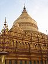

Bagan is an ancient city and a UNESCO World Heritage Site in the Mandalay Region of Myanmar. From the 9th to 13th centuries, the city was the capital of the Bagan Kingdom, the first kingdom that unified the regions that would later constitute Myanmar. During the kingdom's height between the 11th and 13th centuries, more than 10,000 Buddhist temples, pagodas and monasteries were constructed in the Bagan plains alone, of which the remains of over 2200 temples and pagodas survive.
The culture of Bagan was dominated by religion. The religion of Bagan was fluid, syncretic and by later standards, unorthodox. It was largely a continuation of religious trends in the Pyu era where Theravada Buddhism co-existed with Mahayana Buddhism, Tantric Buddhism, various Hindu (Saivite, and Vaishana) schools as well as native animist (nat) traditions.While the royal patronage of Theravada Buddhism since the mid-11th century had enabled the Buddhist school to gradually gain primacy, other traditions continued to thrive throughout the Pagan period to degrees later unseen.
|  | Shwezigon |
| Bupaya | |
| Lawkananda |